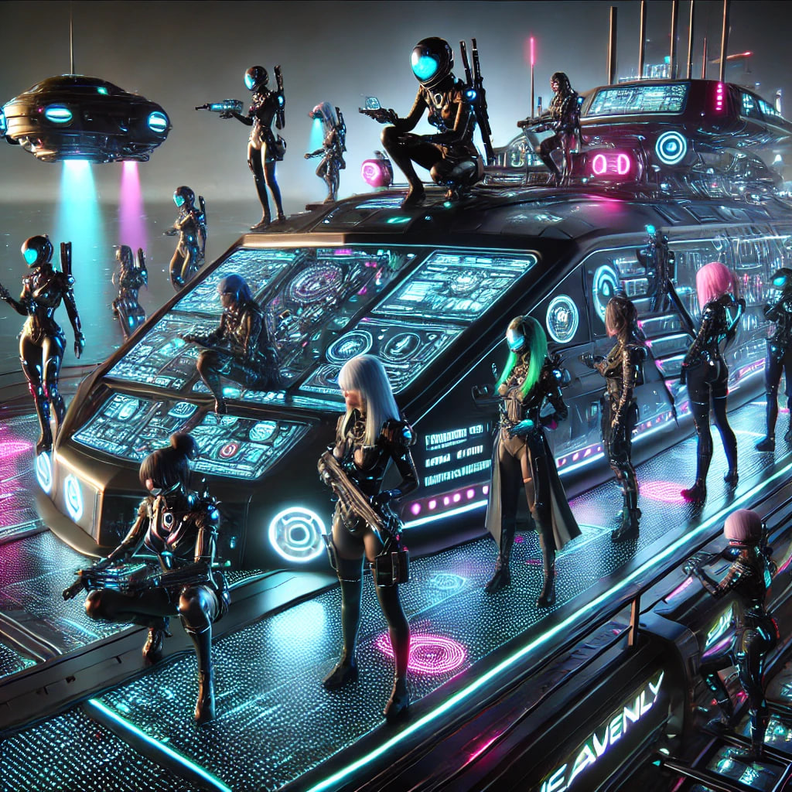
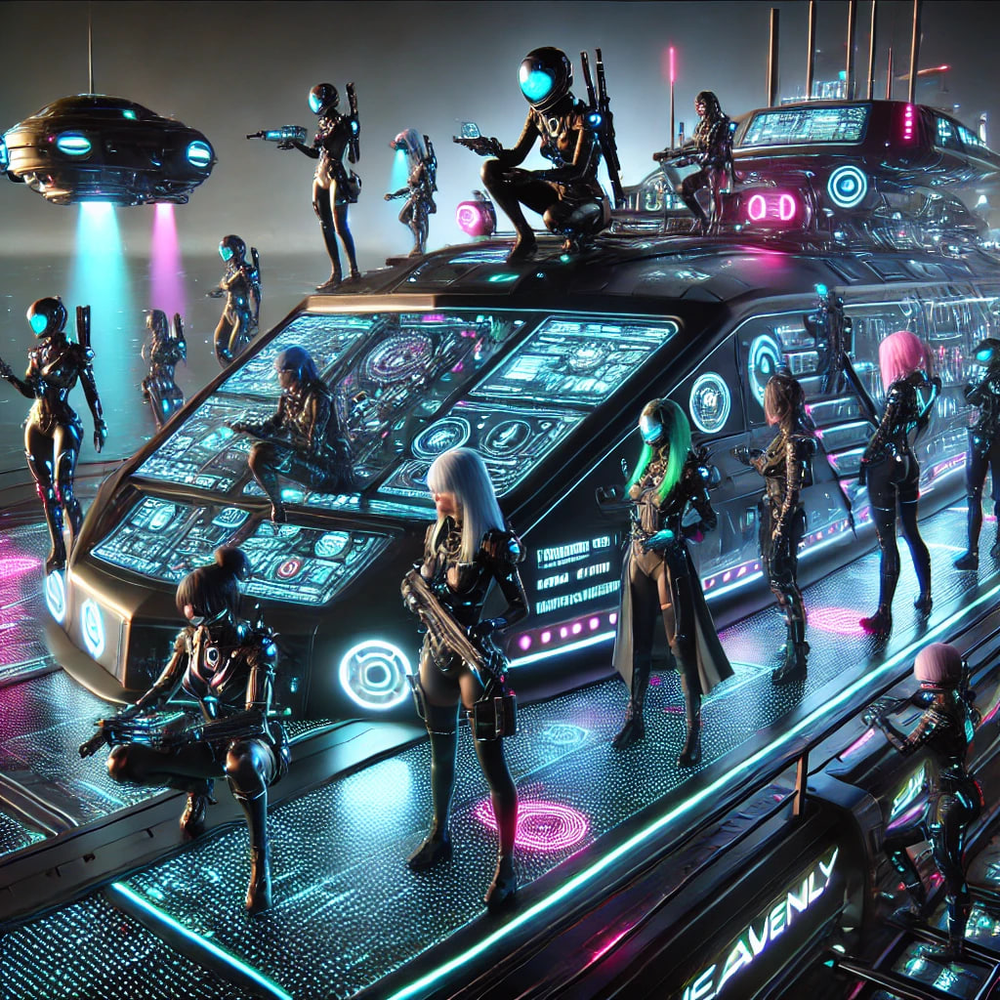

Киберпанк-пират Матвей
Матвей — не просто пират, а настоящая легенда в мире киберпанка. Его образ полон харизмы и опасности. Он высокий и мускулистый, с тёмной кожей, украшенной неоновыми татуировками, которые сверкают в темноте. Его лицо озаряется жесткой решимостью, а в уголке рта крепко зажата сигара, из которой струится дым, создавая таинственную ауру вокруг него. Дреды его волос, окрашенные в яркие цвета, падают на плечи, добавляя ему экзотического вида.
Матвей носит длинное рваное пальто, которое развевается на ветру, словно флаг, символизирующий его независимость. Под пальто скрыты технологичные доспехи, встроенные с новейшими кибернетическими модулями, которые усиливают его физические способности и реакцию. На его запястьях установлены устройства, которые могут запускать импульсные заряды и взламывать системы врагов.
Корабль Матвея
Корабль Матвея, названный "Небесный Корабль", — это великолепный образец киберпанковской инженерии. Его корпус выполнен из черного металла, обшитого светодиодными панелями, которые могут менять цвета, создавая иллюзии и маскируя корабль под окружающую среду.
 

Эпичная битва с Софией
Софа Калытюк — хитрый и безжалостный соперник, который не остановится ни перед чем, чтобы захватить технологии Матвея. Их сражения полны напряжения и стратегии, где каждый ход может стать решающим.
Битва между Матвеем и Софией, обладающей четырьмя катанами, разразилась на фоне захватывающего пейзажа острова. Матвей, уверенный и хладнокровный, использует свои кибернетические модификации, чтобы уклоняться от смертоносных атак Софии. Она, с легкостью управляясь с четырьмя катанами, танцует вокруг него, нанося резкие удары, но Матвей мастерски парирует их, отвечая быстрыми контратаками.
Сражение происходит в ярком свете неоновых огней и вспышек лазеров от дронов, которые кружат над ними. Каждый удар меча и вспышка энергии отражаются в воде, создавая зрелищный визуальный эффект. Наконец, в кульминационный момент, Матвей находит уязвимое место и с невероятной силой наносит решающий удар, сбивая Софию с ног.
После поражения, когда София осознает, что её силы иссякли, она начинает меняться. В этот момент, в глубине души, она понимает, что её стремление к власти и контролю не принесли счастья. Постепенно её гнев утихает, и она принимает себя.
София, лежа на земле, смотрит на Матвея, и в её глазах проблескивает новая идея. В результате сражения она начинает видеть себя не как просто противника, а как женщину, стремящуюся к свободе и равенству. Понимание ведет её к тому, что она становится феминисткой, начав борьбу не против Матвея, а за права женщин в этом киберпанковском мире.